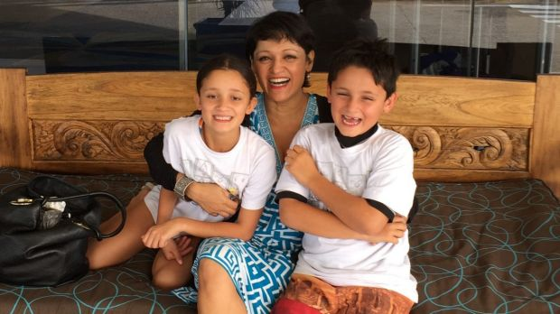
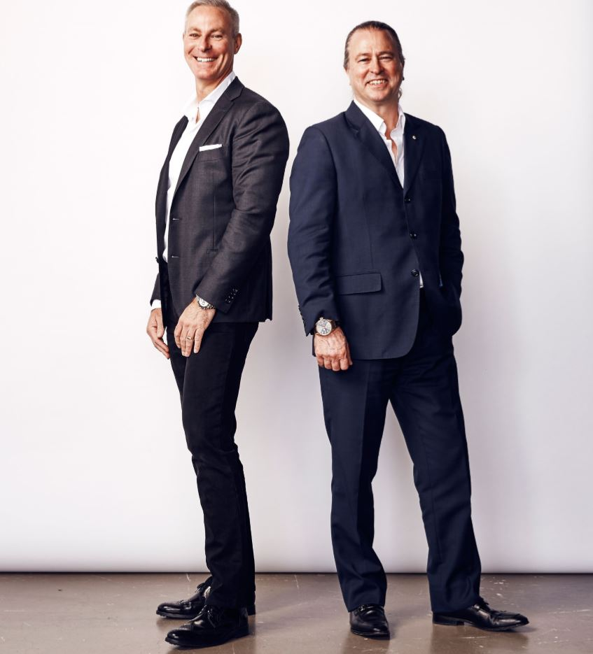

Sharon Verghis
Writer
Home
Bio
Features
Politics
Social issues
Columns
Travel
Contact
Go with the flow
After an accidental start, Iceland’s lagoon wonder is a major tourist attraction and now a lucrative business.
Framed by a black lava rock wall slick with water, Grimur Saemundsen is discreetly surveying his kingdom....
We Are Ticking Time Bombs': Inside Australia's Meth Crisis
"On a warm Thursday evening, at a community center in the pretty coastal town of Yeppoon, central Queensland, fifteen women around a table listen intently to another....
The evolution of Australia Day controversy
Australia's national day of celebration has drawn much criticism recently from those who say it causes unfair hurt to indigenous people. But the controversy, like Australia Day itself, has evolved over many years, reports Sharon Verghis from Sydney.
More than most other nations, perhaps, Australia has a relaxed relationship to its national day. ...
Original Skin
Nudity in dance is staging a comeback
Izzac Carroll, 18, prowls around Henry Moore’s reclining Henry Moore’s Fallen Warrior before nimbly springing up on a bench. ...
Notes from an 'early sender'

"You sent them when?" It is the common attack query that mothers like me face on a regular basis...
Australia Bewildered by Malcolm Turnbull's Apparent Rift with Donald Trump
“Do you believe it? The Obama Administration agreed to take thousands of illegal immigrants from Australia. Why? I will study this dumb deal!”...
The death row inmates who turn to art: ‘We should be willing to listen to what they have to say'
Tyrone Chalmers started drawing at age eight. “Art shadows me everywhere I go in life… my best work comes from within my dreams.”
Age of empire

The newly formed Rockpool Dining Group is a game-changer in Australian restaurants. But how does it work? Who’s running it? And why? Sharon Verghis gets the inside word.
Australia is the hardest place inthe world to run a restaurant: Tom Pash...
Machu Picchu just one of Peru’s many highlights for travellers
"IT would have to be one of the most dramatic descents in the world. As our plane approaches Alejandro Velasco Astete Airport in Cusco, Peru,...
Serena Williams' demented detractors
In September last year, Nike nominated Serena Williams as the best athlete in the world – of all time...
Sydney Mardi Gras: How a violent first march spurred change
On Saturday, Sydney's famous Gay and Lesbian Mardi Gras marks its 40th anniversary - and its first celebration since Australia legalised same-sex marriage. Much has changed since violence marred the first parade.